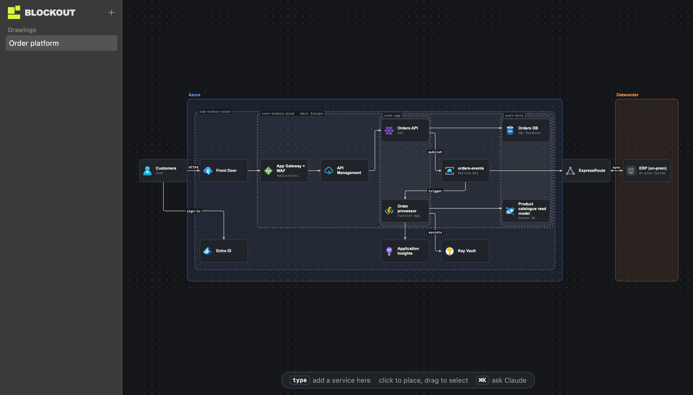

Give your architecture shape.
A fast, keyboard-driven canvas for cloud and solution architecture. Type a service, press Tab for the next one, and the connectors route themselves. Nothing to align, nothing to style.

From thought to structure
Four verbs
Type
Click anywhere and type a few letters: aks, sql, gateway. Over a hundred cloud and AI components, or any text as a plain box.
Connect
Tab adds the next service, already connected. Each connector gets its own lane, so lines never run on top of each other.
Group
Wrap services in boundaries for networks and subscriptions, or in titled sections. Add sticky notes for open questions.
Export
Copy the drawing as an image, or export PNG and PDF, light on white for documents and slides.
Works with Claude Code
Describe it, and watch it appear
Every drawing is a plain JSON file in a BLOCKOUT folder in your home folder. The app reloads a drawing the moment its file changes, so Claude Code can draw while you watch, and ⌘Z undoes what it did.
Press ⌘K in the app to ask for a change to the open drawing. Or install the command line tool and the Claude Code skill from the app's Claude menu, and ask Claude Code in any project to draw that system in BLOCKOUT.
Both need Claude Code installed. The app works fully without it.
# from any terminal
blockout list
blockout new "Order platform" --from draft.json
blockout validate "Order platform"
blockout export "Order platform" -o order.png
blockout open "Order platform"
First launch
Install
- Open the downloaded
BLOCKOUT.dmgand drag BLOCKOUT onto Applications. - Open BLOCKOUT. macOS will say it cannot check the app, because this build is not signed with an Apple developer certificate.
- Open System Settings > Privacy & Security, scroll down, and click Open Anyway next to BLOCKOUT. You only do this once.
- Optional: choose Claude > Install Command Line Tool and Claude Skill in the menu bar.